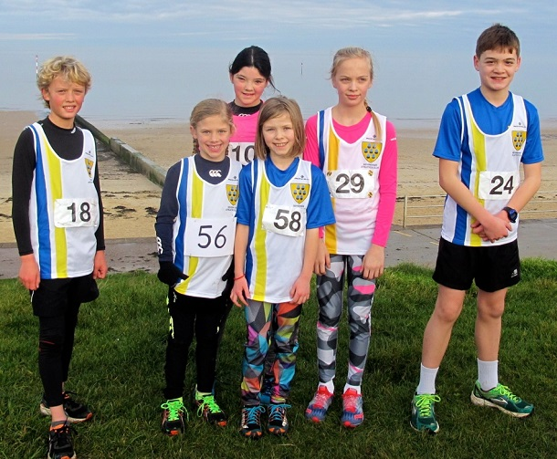

The fourth race in the Kent Fitness League Cross Country series took place in Minnis Bay on Sunday January 8th, over a challenging and muddy 6-mile course along the seafront towards Reculver Towers and back through deep water-filled dykes, writes Jim Knight.
Although the weather was kinder this year, and the dykes were reportedly "knee deep rather than waist deep", several runners finished the race covered from head to toe in mud.
A record 30 senior runners from Sevenoaks Athletics Club and 6 juniors made the long journey to Minnis Bay.

The juniors raced over a testing 3k course. In the Under 11 race the team packed well with Alice Lamplugh placing 3rd, a repeat of her performance at the last outing. Backing her up the ever-improving Ella Baker and Tabitha Elcoch-Haskins stormed home in 5th and 7th respectively. Bringing the team home, Hannah Galligan came 11th to secure the team 2nd place.
In the U11 boys race Verner Krynauw continued his impressive season with a 4th place and in the U14 Boys race Harvey Taylor finished off a successful day's competition with a 7th place. "These young runners are a credit to the Club. They enjoy competing and representing the Club." said their Coach Darrell Smith.
The senior race was won by Ed Bovington of Istead & Ifield Harriers who just beat Noel Sutton of Thanet Road Runners in a sprint finish.
Darrell Smith led the SAC senior team home with his best performance of the season, coming 8th (3rd M40) out of the 375 runners.
63 year-old James Graham had another outstanding run to finish in 39th position, easily the fastest M60 to retain his lead in the series.
There were excellent scoring performances from Matthew Walker (20th), Andrew Milne (27th), Dan Witt (45th), John Stevens (51st), Lee Lintern (52nd), and Steve Walker (68th).
Once again Cath Linney led the women’s team home with an excellent run to finish in 100th place (2nd W45). The club’s other scorers were Heather Fitzmaurice (142nd), Sally Mortleman (161st) and Sally Shewell (209th, 2nd W55).
Of the non-scorers, Jim Fitzmaurice was first M70, Richard Pitcairn-Knowles first M80 and Valerie Place third W55.
On the day, the SAC women's team were third, the men's team third and the combined team fourth. After four races, the SAC women's, men's and combined teams are all fourth. The Sevenoaks AC results were as follows:
| Ov Pos | Lg Pos | Runner | Age | Time | Club | Rating | # Races |
|---|---|---|---|---|---|---|---|
| 8 | 8 | Darrell Smith | 49 | 37:39 | Sevenoaks AC | 97.20 | 7 |
| 20 | 20 | Matthew Walker | 39 | 38:55 | Sevenoaks AC | 92.40 | Debut |
| 27 | 27 | Andrew Milne | 34 | 39:08 | Sevenoaks AC | 89.60 | 9 |
| 39 | 38 | James Graham | 63 | 40:59 | Sevenoaks AC | 85.20 | 15 |
| 45 | 44 | Daniel Witt | 41 | 41:28 | Sevenoaks AC | 82.80 | 37 |
| 51 | 49 | John Stevens | 55 | 41:51 | Sevenoaks AC | 80.80 | 18 |
| 52 | 50 | Lee Lintern | 36 | 41:55 | Sevenoaks AC | 80.40 | 23 |
| 68 | 66 | Steve Walker | 42 | 42:59 | Sevenoaks AC | 74.00 | Debut |
| 74 | 71 | Nick Holmes | 41 | 43:18 | Sevenoaks AC | 72.00 | 2 |
| 100 | 8 | Cath Linney | 47 | 45:00 | Sevenoaks AC | 94.07 | 25 |
| 108 | 99 | Andy Evans | 46 | 45:16 | Sevenoaks AC | 60.80 | 33 |
| 132 | 119 | Peter Ash | 47 | 46:30 | Sevenoaks AC | 52.80 | 6 |
| 142 | 16 | Heather Fitzmaurice | 47 | 46:47 | Sevenoaks AC | 87.29 | 61 |
| 146 | 130 | John Denyer | 68 | 47:03 | Sevenoaks AC | 48.40 | 42 |
| 150 | 134 | Allan McPherson | 30 | 47:33 | Sevenoaks AC | 46.80 | 7 |
| 158 | 140 | Duncan Cochrane | 59 | 47:51 | Sevenoaks AC | 44.40 | 22 |
| 161 | 19 | Sally Mortleman | 51 | 47:56 | Sevenoaks AC | 84.75 | 11 |
| 209 | 32 | Sarah Shewell | 57 | 50:56 | Sevenoaks AC | 73.73 | 93 |
| 215 | 34 | Nicki Thompson | 40 | 51:20 | Sevenoaks AC | 72.03 | 17 |
| 220 | 37 | Kim Pegg | 34 | 51:47 | Sevenoaks AC | 69.49 | Debut |
| 227 | 188 | Lyndon Collins | 66 | 52:25 | Sevenoaks AC | 25.20 | 59 |
| 228 | 40 | Valerie Place | 56 | 52:28 | Sevenoaks AC | 66.95 | 2 |
| 271 | 59 | Clair Thornton | 41 | 55:29 | Sevenoaks AC | 50.85 | 13 |
| 272 | 60 | Becca Crowe | 56 | 55:33 | Sevenoaks AC | 50.00 | 4 |
| 273 | 61 | Grace Manzotti | 47 | 55:55 | Sevenoaks AC | 49.15 | Debut |
| 275 | 62 | Happy Fisher | 40 | 56:05 | Sevenoaks AC | 48.31 | 43 |
| 279 | 217 | James Fitzmaurice | 74 | 56:23 | Sevenoaks AC | 13.60 | 58 |
| 329 | 238 | Peter Nuttall | 44 | 1:03:06 | Sevenoaks AC | 5.20 | 20 |
| 344 | 99 | Sylvia Lewis | 64 | 1:06:57 | Sevenoaks AC | 16.95 | 11 |
| 358 | 248 | Richard Pitcairn-Knowles | 84 | 1:11:49 | Sevenoaks AC | 1.20 | 15 |
The full results are here.
The Kent Fitness League is a series of cross-country races between 18 registered Athletics Clubs in Kent. Any number of club members can compete, but 12 are needed to score in the team competition – 8 men (of whom two must be V50 and one V40) and 4 women (of whom one must be V45 and one V35).
The next race will be on Sunday January 29th in Nurstead Court, Meopham starting at 11 am.